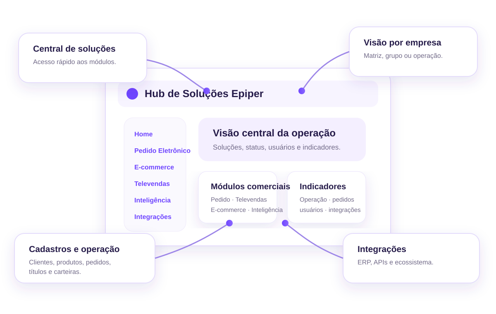

Televendas
Dashboard, clientes, carteira, agenda, CRM, metas, WhatsApp, títulos, pedidos e relatórios para a equipe comercial.
Conhecer Televendas →O Hub Epiper centraliza acesso, filiais, permissões, indicadores e integrações para que cada canal trabalhe sobre o mesmo núcleo de clientes, produtos e pedidos.
Os módulos podem ser liberados separadamente por empresa, usuário e filial.
Dashboard, clientes, carteira, agenda, CRM, metas, WhatsApp, títulos, pedidos e relatórios para a equipe comercial.
Conhecer Televendas →Portal B2B em lista para selecionar cliente, consultar catálogo, preço, estoque e condições e enviar o pedido.
Conhecer Pedido Eletrônico →O frontend não consulta o ERP diretamente. Os conectores alimentam o núcleo comercial, e cada produto consome somente o que o usuário e a filial estão autorizados a acessar.
Ele funciona como a porta de entrada da experiência Epiper: centraliza acessos, aproxima informações importantes e ajuda a equipe a entender quais soluções estão disponíveis para cada operação ou empresa.
Pedido Eletrônico e Televendas ficam acessíveis a partir da mesma central.
CentralizaçãoClientes, pedidos, produtos, títulos e carteiras podem compor a visão operacional conforme o escopo habilitado.
ContextoStatus dos serviços, utilização e indicadores ajudam a equipe a identificar rapidamente o que merece atenção.
VisibilidadeO Hub também aproxima o contexto das integrações e conexões que sustentam os módulos comerciais.
EcossistemaA imagem complementa a tela real do Hub e mostra como cada grupo de informação se relaciona com a operação.

Funcionalidade, integração e processo precisam caminhar juntos. Estes são os pontos que mais influenciam a qualidade do projeto e a adoção da equipe.
O Hub apresenta a experiência e os recursos da Epiper. Dados e regras continuam respeitando a arquitetura definida com o ERP e as integrações de cada projeto.
A implantação pode começar por Televendas, Pedido Eletrônico ou pela integração do núcleo com o ERP.